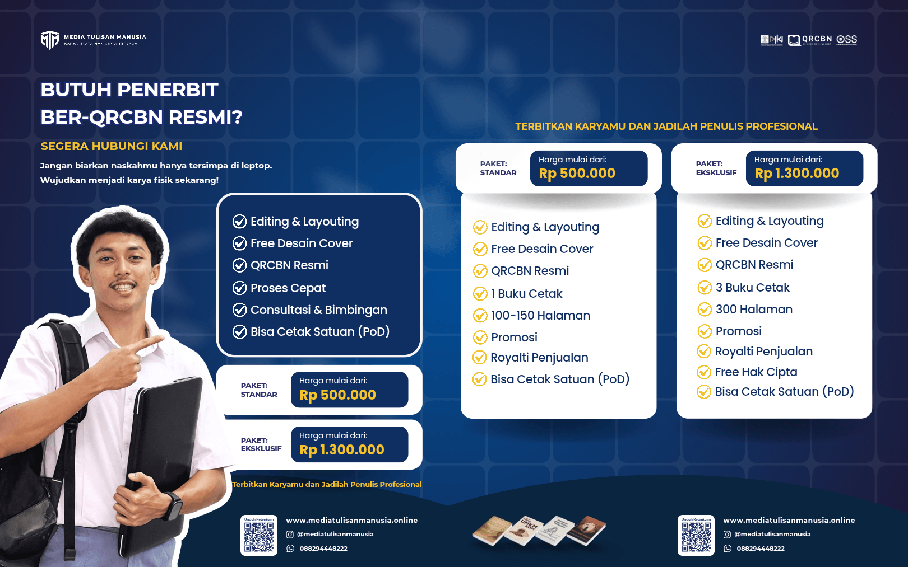

5 Langkah Jitu Menerbitkan Buku dan Melindungi Hak Cipta (Kreator Wajib Tahu!)

Menulis buku adalah sebuah pencapaian besar yang membutuhkan waktu, tenaga, pemikiran mendalam, dan dedikasi yang tinggi. Mulai dari merumuskan kerangka cerita, menghadapi writer's block, hingga akhirnya menyelesaikan draf pertama, semuanya adalah proses panjang yang patut dirayakan. Namun, tahukah Anda bahwa perjalanan sebuah karya tidak berhenti hanya sampai di titik terakhir naskah selesai diketik?
Tantangan sesungguhnya di dunia literasi modern adalah bagaimana cara menerbitkan buku tersebut agar bisa dinikmati oleh pembaca luas, serta memastikannya aman dari ancaman plagiarisme atau pembajakan intelektual.
Sayangnya, masih banyak penulis dan kreator di Indonesia yang saking semangatnya ingin segera terbit, mereka menjadi abai terhadap prosedur legalitas karyanya. Akibatnya, ide orisinal, tokoh cerita, atau format materi yang mereka susun rentan dicuri oleh pihak tak bertanggung jawab. Agar kerja keras Anda terbayar tuntas, sukses di pasaran, dan aman secara hukum, ikuti 5 langkah jitu menerbitkan buku sekaligus mengamankan Hak Cipta berikut ini!
1. Lakukan Self-Editing yang Ketat Sebelum Naskah Dikirim
Sebelum memikirkan proses penerbitan, hal pertama yang harus dipastikan adalah naskah Anda sudah berada dalam versi terbaiknya. Jangan pernah mengirimkan draf pertama (first draft) langsung ke penerbit. Lakukan self-editing atau penyuntingan mandiri untuk memeriksa kesalahan pengetikan (typo), kelogisan alur cerita, konsistensi karakter (untuk karya fiksi), atau keakuratan data dan riset (untuk karya non-fiksi).
- Endapkan Naskah: Setelah selesai menulis, diamkan naskah selama 1-2 minggu sebelum membacanya kembali. Ini memberi Anda perspektif yang lebih segar untuk menemukan kesalahan.
- Baca Bersuara: Membaca naskah dengan suara lantang sangat ampuh untuk menemukan kalimat yang kaku atau dialog yang tidak natural.
- Cek Format: Pastikan margin, jenis font, dan spasi sudah rapi sesuai standar yang nyaman dibaca agar editor penerbit lebih mudah memproses karya Anda.
2. Pilih Jalur Penerbitan yang Tepat dan Menguntungkan
Dulu, penulis harus menunggu berbulan-bulan, bahkan bertahun-tahun, dengan ketidakpastian apakah naskahnya diterima oleh penerbit mayor atau ditolak. Kini, industri perbukuan telah berevolusi. Jalur penerbitan indie (independen) menjadi solusi cerdas dan profesional bagi penulis yang ingin karyanya cepat terbit.
Keuntungan menerbitkan secara indie adalah Anda memiliki kendali penuh atas proses kreatif, mulai dari desain cover, tata letak (layout), jadwal rilis, hingga margin keuntungan royalti penjualan yang jauh lebih besar. Pastikan Anda memilih mitra penerbitan indie yang kredibel, transparan dalam proses produksinya, dan memiliki portofolio cetakan buku yang berkualitas tinggi.
3. Pastikan Buku Memiliki Identitas Resmi (QRCBN/ISBN)
Buku yang sah secara komersial dan diakui di industri literasi harus memiliki nomor identitas. Jika dulu ISBN adalah satu-satunya pilihan yang seringkali memakan waktu lama untuk diurus, kini telah hadir QRCBN (Quick Response Code Book Number).
QRCBN adalah alternatif identifikasi buku yang modern, diakui secara luas, dan proses pengurusannya jauh lebih cepat. Dengan QRCBN, pembaca dapat langsung memindai barcode di sampul belakang buku Anda menggunakan smartphone untuk melihat metadata buku secara online, mencegah pemalsuan buku fisik di pasaran. Penerbit yang profesional biasanya sudah menyediakan layanan bundling pengurusan QRCBN ini secara gratis saat Anda mendaftarkan naskah untuk diterbitkan.
4. Daftarkan Hak Cipta (HKI) Karya Tulis Anda Secara Hukum
Ini adalah langkah paling krusial yang sering kali disepelekan atau dilewatkan oleh penulis pemula. Menerbitkan buku dan menjualnya ke publik tidak otomatis memberikan perlindungan hukum yang mutlak jika suatu saat terjadi sengketa kepemilikan ide.
Bayangkan jika novel Anda yang laris tiba-tiba alur ceritanya dibuat menjadi sinetron atau film pendek oleh orang lain tanpa izin Anda, atau modul pembelajaran yang Anda buat di-copy-paste dan dijual atas nama orang lain. Mendaftarkan Hak Cipta (HKI) ke Direktorat Jenderal Kekayaan Intelektual (DJKI) Kementerian Hukum dan HAM adalah perisai pelindung utama Anda.
Dengan mengantongi Sertifikat Hak Cipta, Anda memiliki pegangan hukum yang absolut bahwa Anda adalah pencipta tunggal. Anda berhak melayangkan somasi, meminta ganti rugi, atau menuntut pembagian royalti kepada pihak yang membajak karya Anda. Jangan tunggu karya viral dan dibajak baru Anda sibuk mengurus legalitasnya!
5. Percayakan pada Layanan All-in-One yang Terpercaya
Mengurus desain, tata letak, kelengkapan identitas buku (QRCBN), hingga berhadapan dengan birokrasi pendaftaran HKI secara mandiri tentu akan menyita waktu, tenaga, dan pikiran Anda. Padahal, waktu berharga Anda seharusnya digunakan untuk menulis karya luar biasa berikutnya. Sebagai solusinya, Anda bisa menyerahkan seluruh kerumitan proses teknis dan legalitas ini kepada perusahaan konsultan dan penerbitan yang kredibel.
Wujudkan dan Lindungi Karya Anda Bersama PT Media Tulisan Manusia!
Kami hadir sebagai mitra strategis bagi para penulis, akademisi, dan kreator di seluruh Indonesia. Dengan memegang prinsip "Karya Nyata Hak Cipta Terjaga", tim profesional kami menyediakan ekosistem layanan terintegrasi yang meliputi:
- Penerbitan Buku (Cetak eksklusif & Layout premium)
- Pengurusan Identitas Buku Resmi (QRCBN)
- Jasa Pendaftaran Hak Cipta (HKI) DJKI dengan proses cepat
- Pembuatan legalitas usaha (NIB) untuk bisnis kreatif Anda.
Anda cukup fokus menghasilkan ide dan karya-karya hebat. Urusan agar buku Anda terbit dengan indah dan dilindungi secara hukum, biar tim Media Tulisan Manusia yang menyelesaikannya untuk Anda.
Siap untuk menerbitkan naskah impian Anda hari ini?
Mulai Langkahmu